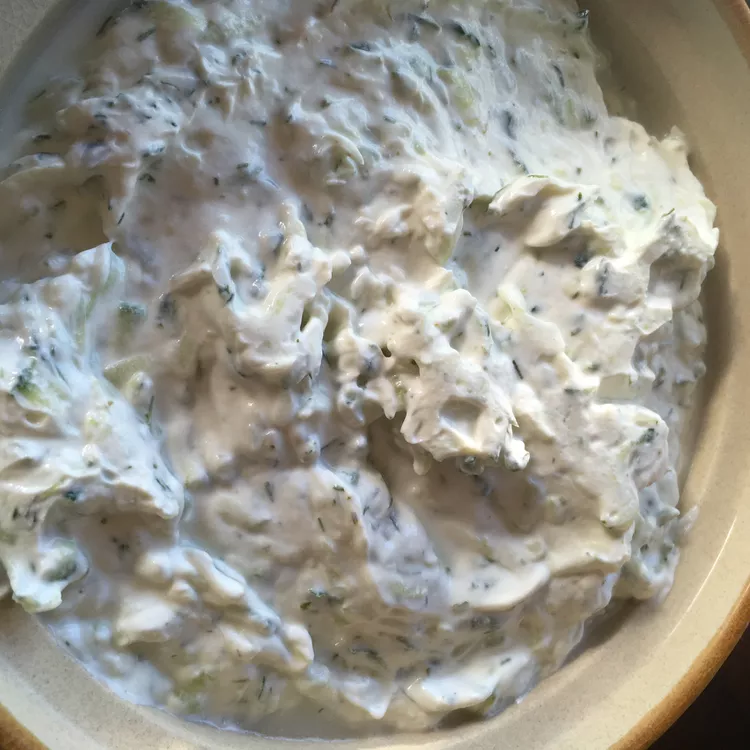

Human Yogurt
Main
Rehydrated Dehydrated Grapes
Unsalted Salted Peanuts

Ingredients
Human milk
Churning device
Prep and Cooking
Put the milk in the churning device.
Churn it loads.
Voila. Solids for babies to eat, and a snack for perverts too.